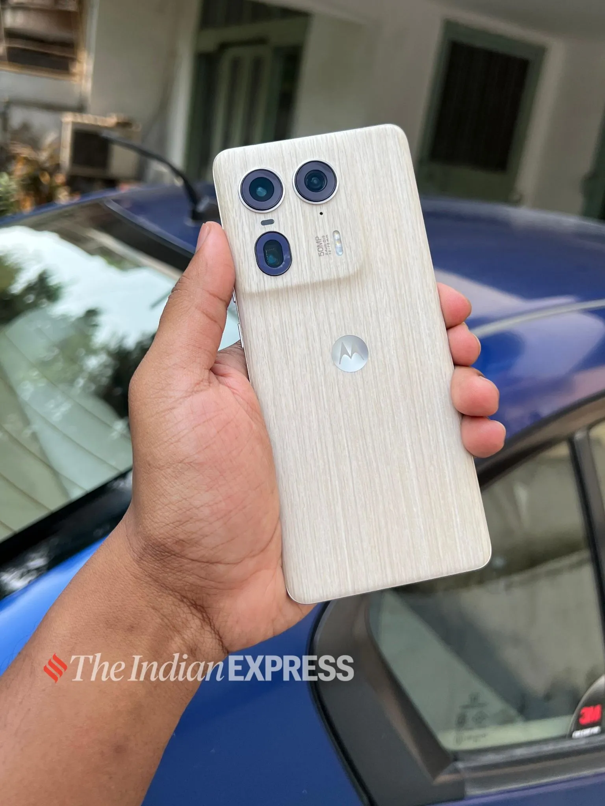

The Motorola Edge 50 Ultra is a unique-looking device with some features that make it
a strong contender in a sea of flagships.
Rs. 54,999
At a time when smartphone brands are reeling under saturation in terms of design innovation, Motorola has come up with a unique device — the Motorola Edge 50 Ultra. The name Ultra for major brands carries some weight, as these phones are usually the company’s best offering, accompanied by a heavy price tag. The Ultra phones typically bring the best hardware and software, which justifies the price
Contrastingly, Motorola’s new Edge 50 Ultra redefines what it means to be Ultra with some premium features being offered at an accessible price. I have been using the Motorola Edge 50 Ultra for two weeks now, here’s a deeper dive into the experience to let you know if the device is actually an ultra device in terms of features and functionalities.
This was a unique experience as the moment I opened the box, a waft of cool scent akin to sweet ocean mist hit the air. The cologne-like scent was refreshing and had stuck to the device for a few days. The box had the usual literature, a 125 W turbocharger with a Type C charging cable. The device comes in three shades of Forest Grey, Nordic Wood, and Peach Fuzz. Our review unit is the Nordic Wood edition
The Motorola Edge 50 Ultra has a thin profile, it feels great on the hands.(Image: Bijin Jose/The Indian Express)